Tutorial 2 of 17
Lid-driven cavity
Your first case, built from an empty project: a closed box of fluid stirred by its sliding lid.
The lid-driven cavity is the classic first exercise of flow simulation. A square box is full of fluid; its top wall (the lid) slides sideways and drags the fluid round in one large eddy. There is no geometry file to import and the run takes seconds, so it is the quickest way to learn the six steps of EasyFOAM: Geometry, Mesh, Physics, Boundaries, Run, Results.
The box is 1 m wide and 1 m high, the lid moves at 1 m/s and the fluid has a viscosity of 0.01 m²/s. That gives a Reynolds number of 1 × 1 / 0.01 = 100: slow, smooth (laminar) flow.
What you will learn
- create a project and find your way round the window
- make a mesh from a plain box and name its faces
- choose a fluid and a flow model
- give a wall a motion, run, and look at the speed on a slice
Computer time: a few seconds for the mesh and about ten seconds for the run.
1Start a new project
Start EasyFOAM. The start page offers ready-made examples, but this time we build the case ourselves.
- Click New project.

2Name it
A project is an ordinary folder. EasyFOAM creates it for you and keeps everything about the case inside.
- Type the name
cavity. - Choose the folder to create it in, or keep the suggestion.
- Leave Start from on Empty project.
- Click Create project.

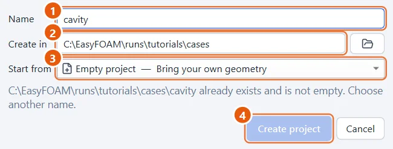
3Look around the window
The project opens on the first step. Take a moment to see how the window is laid out; it stays the same for every case.
This case has no shapes: the fluid simply fills a box. So there is nothing to do in Geometry.
- The six steps, from top to bottom. A mark on the right shows whether a step is ready.
- The settings of the step you are on.
- The 3D view. Drag with the left mouse button to turn, with the wheel to zoom.
- Plots and the log of the running tools.
- Click Next: Mesh.

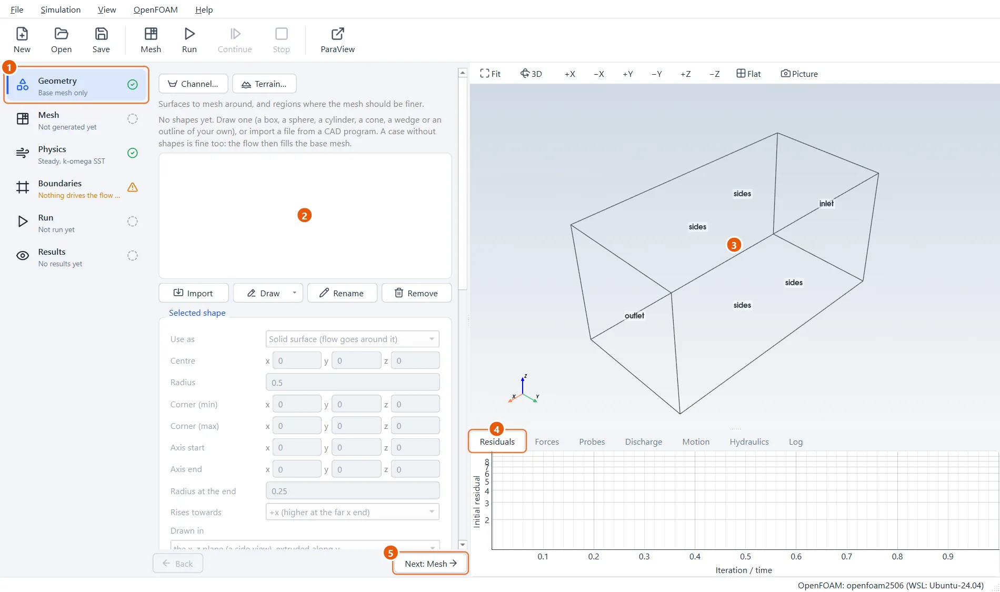
4Size the box
Every mesh starts from a box of brick-shaped cells, the base mesh. Here the base mesh is the whole mesh. Make it 1 m × 1 m, and only 0.1 m thick with a single cell through the thickness: that turns the case into a two-dimensional one.
- Corner (min):
0,0,0. - Corner (max):
1,1,0.1. - Cells:
40,40,1. The line below tells you the cell size and the total: 1,600 cells. - Click Fit to bring the new box into view.

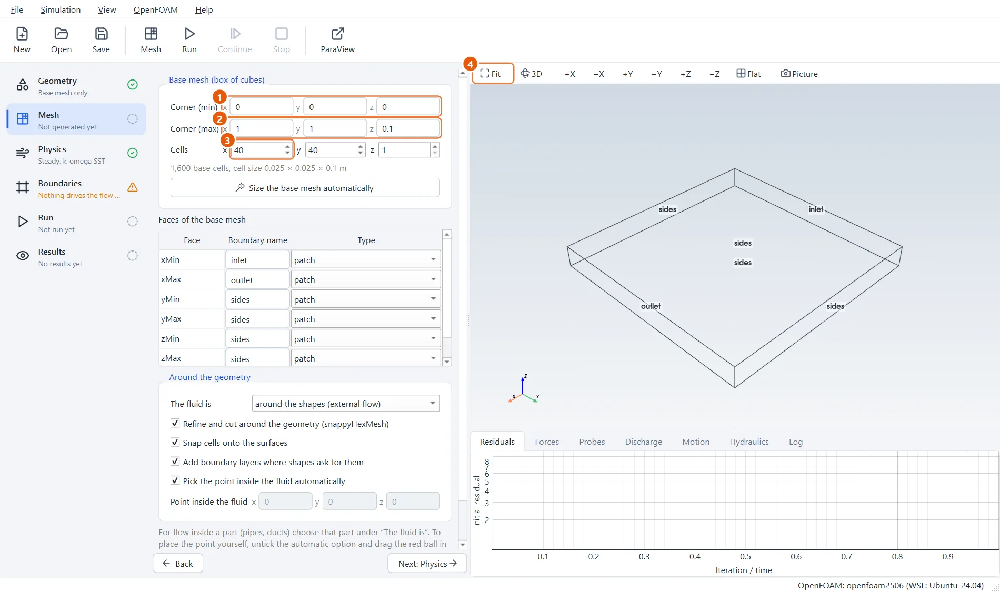
5Name the six faces
The six faces of the box become the boundaries of the flow. Give them names you will recognise later, and a type. Faces with the same name become one boundary.
- xMin, xMax and yMin: name
walls, typewall. - yMax, the top: name
lid, typewall. - zMin and zMax, front and back: name
frontAndBack, typeempty. Empty tells OpenFOAM that nothing happens in that direction.

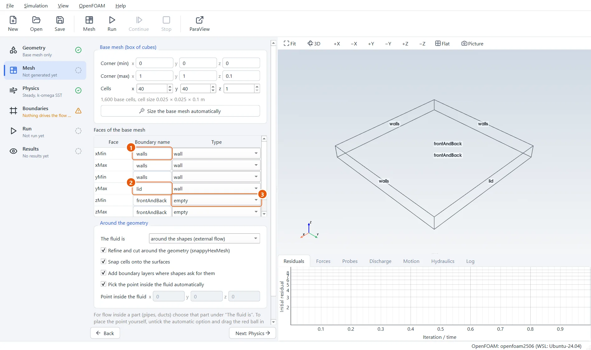
6Generate the mesh
There are no shapes to cut the mesh around, so switch that part off and make the mesh.
- Untick Refine and cut around the geometry.
- Click Generate mesh (or press F5).

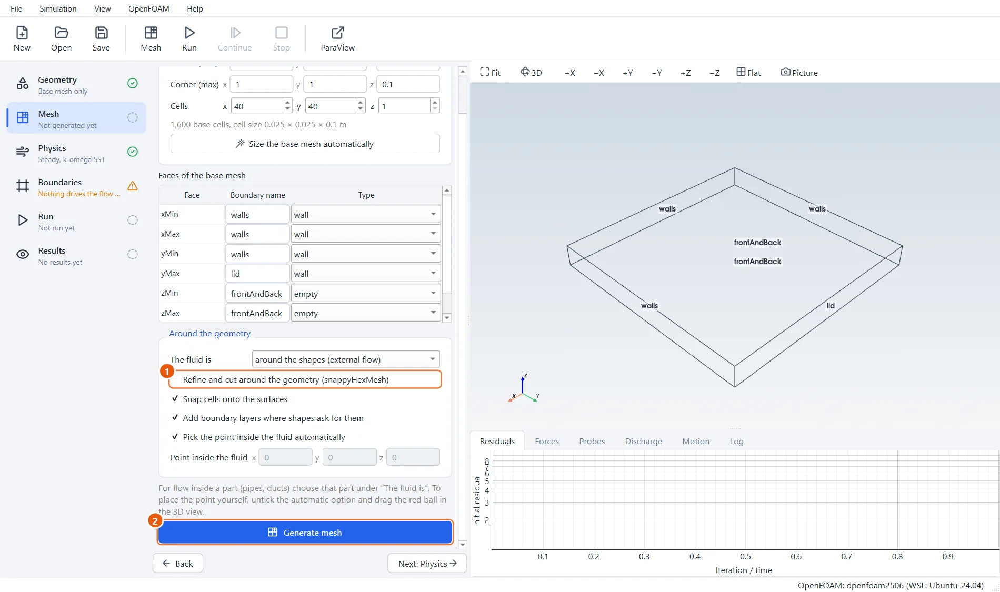
7Check the mesh
After a few seconds the mesh appears in the 3D view. OpenFOAM's own mesh check has already run: its report is in the log.
- The Mesh step now shows a green tick and the number of cells.
- Open the Log tab and look for Mesh OK near the end.
- Click Next: Physics.

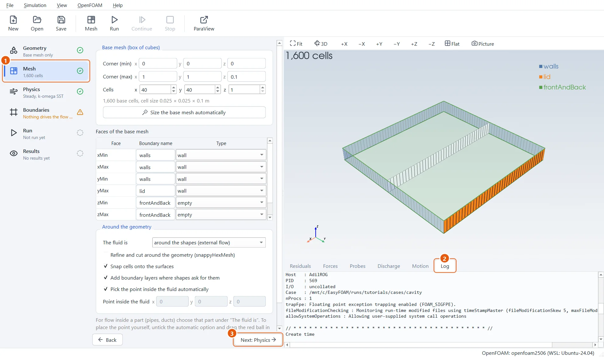
8Choose the physics
The flow is steady and slow, so the default flow type is right. Switch the turbulence model off and enter the viscosity.
- Leave Flow type on Incompressible flow, steady.
- Turbulence: Laminar (no turbulence model).
- Fluid: Custom.
- Kinematic viscosity:
0.01.

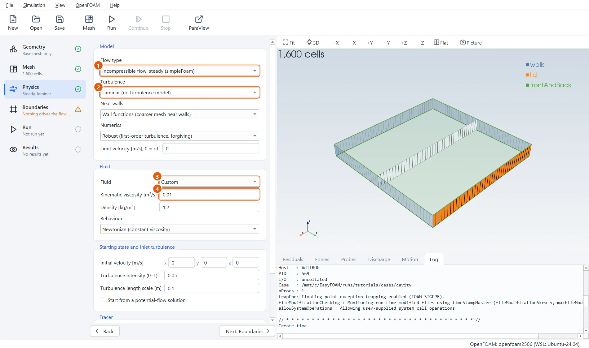
9Make the lid move
The Boundaries step lists the boundaries you named. Walls start as ordinary walls that stand still, which is right for walls. The lid needs a speed. The boundary you select lights up in the 3D view.
- Select lid.
- Condition: Moving wall.
- Velocity:
1,0,0(1 m/s in the x direction).

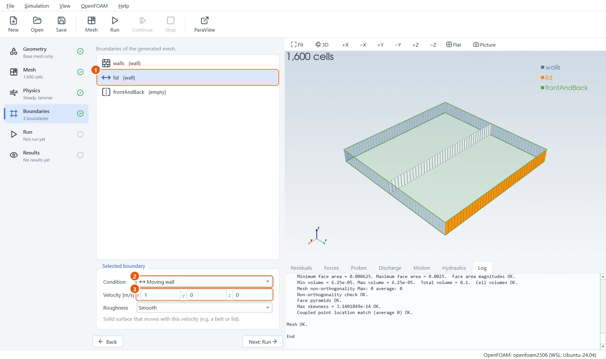
10Set up the run
A steady run repeats the calculation until the flow no longer changes. Three hundred repeats (iterations) are plenty here. The run stops earlier by itself if the flow has settled before that.
If something is still missing or wrong, a checklist at the bottom of this panel says so in plain words, and so does the mark next to each step on the left.
- Iterations:
300. - Save every (iterations):
100. - Click Run in the toolbar (or press F6).

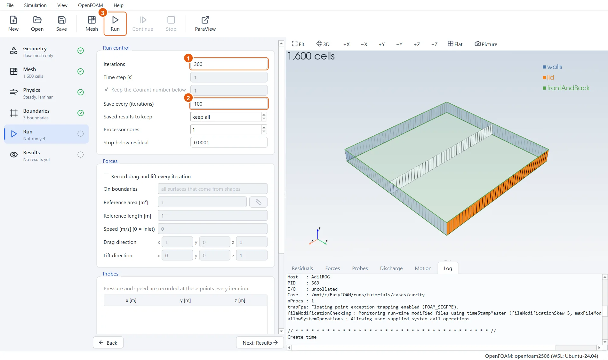
11Watch it converge
While the run goes on, the Residuals plot shows how much each quantity still changes from one iteration to the next. Lines that fall steadily mean the solution is settling down. When the run ends, EasyFOAM jumps to the results by itself.
- The residuals of the velocity (
Ux,Uy) and the pressure (p) fall by several powers of ten. - The Run step shows that the run finished.

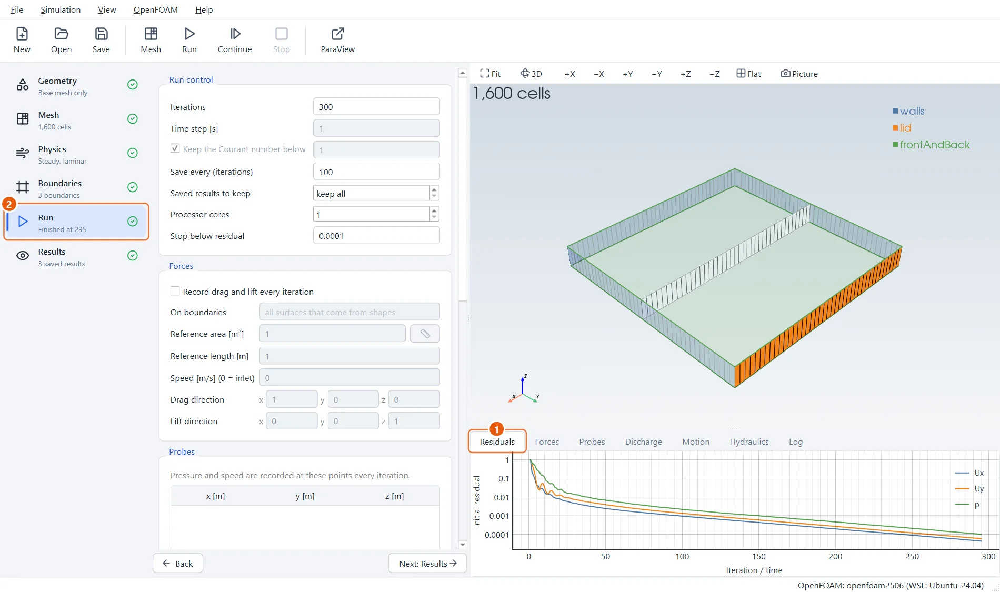
12Look at the flow
The Results step shows the speed on a slice through the box: fast under the lid, slow in the corners, with one large eddy turning in the middle.
- Quantity:
Uis the speed,pthe pressure. - Show: Slice through the flow.
- Slice plane: Normal to z looks straight into the box.
- Saved time steps through the saved iterations.
- Click −Z to look straight at the slice.

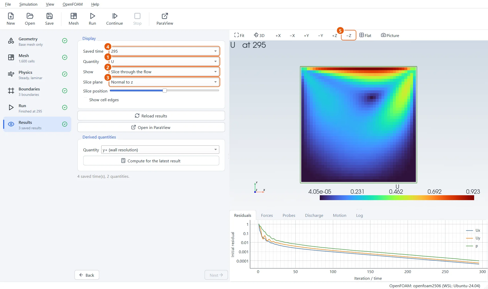
13Try it yourself
- Halve the viscosity to
0.005(Reynolds number 200) and run again: the eddy moves off-centre. - Use
80,80,1cells and compare. A result that changes little on a finer mesh can be trusted more. - Tick Show cell edges in the Results step to see the mesh under the colours.
- Click Open in ParaView for streamlines and anything else the built-in view does not offer.
Everything you did is stored in the project folder as an ordinary OpenFOAM case, which you can open, read and run by hand.